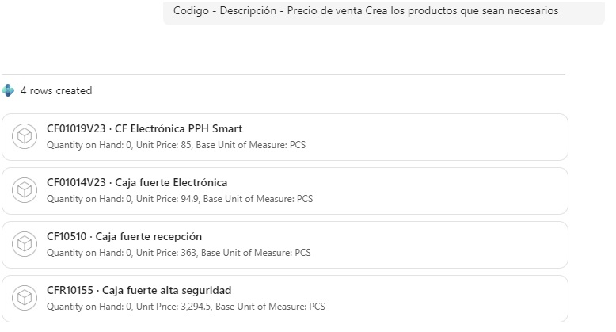

Copilot Can Now Write Data in Business Central 29
Until recently, Copilot in Business Central was mostly a way to ask questions: you described what you needed, and it found or explained information. With Business Central 29, part of the 2026 release wave 2, the experience is changing. Copilot can now help create and update business data as well.
That means you can describe a customer, correct a phone number, bring products in from a web page, or prepare payment journal lines using everyday language. The important part is not just that Copilot can make changes. Business Central keeps the user involved in checking and accepting the proposed data.
From asking questions to getting work done
The updated Copilot experience gives you a different place to start. Instead of moving through several pages and entering every field yourself, you can explain the task in the Copilot panel and let it work through the request.
Think of it as another way to interact with Business Central, not as a replacement for the application. Copilot can take care of the initial data entry or prepare a set of changes; you still decide whether the result is correct.
Create a customer from a short description
A straightforward first test is to ask Copilot to create a customer. In my example, I provided the customer's name, address, city, postal code and phone number, and specified that it was a domestic customer.
Copilot showed the steps it was taking and used a customer template to create the record. That matters: it can build on setup that already exists in your company instead of treating every new record as a blank form. Once the customer had been created, Copilot provided a link to open the record and review it.
Review is part of the workflow
When you open the new customer card, the values proposed by Copilot are marked as needing review. They are not silently treated as verified data. You can inspect each value and accept it once you are satisfied.
This human review step is a useful part of the design. AI can speed up entering information, but a person remains responsible for confirming what becomes trusted business data. It is worth taking that step even when the request seems simple.
Correct an existing record
Writing data is not limited to new records. I also tested a correction by asking Copilot to replace an incorrect phone number on an existing customer.
Copilot found the customer and proposed the update. The new value appeared as pending review, just as it had during customer creation. After checking and accepting it, the change was reviewed. The same pattern applies: describe the change, inspect what Copilot found, and approve the proposed value.
Turn a web page into an item list
For a larger data-entry task, I opened a regular web page listing four products and asked Copilot, from the item list, to extract their item numbers, descriptions and sales prices and create the necessary records.
Copilot first analyzed the page, then reported that it had created four rows in Business Central. Searching the item list confirmed that the products were there with their descriptions and prices. This kind of task shows how natural-language input can reduce repetitive entry when you need to bring a small catalogue into the system.

Prepare payments within a budget
I also tried a finance scenario: I gave Copilot a €10,000 budget and asked it to prepare a payment journal that would cover as many overdue or soon-due vendor documents as possible.
Copilot analyzed the open vendor invoices and suggested options. After I selected the option I wanted, I asked it to add the lines to the payment journal. Refreshing the page showed the prepared lines in the journal. Here, Copilot combines analysis with a practical follow-up action—but the result still deserves a careful review before posting.
What this means for extensions
This shift from navigation to natural-language requests is not only relevant to standard Business Central pages. Copilot can also work with data in extensions, building on its ability to use and read extension data. That opens up interesting possibilities for solutions that need to help users create or update records in their own application areas.
As always, what is available depends on how the solution is built and configured. Start with a focused scenario and make sure the review process suits the data and the business risk involved.
Getting useful results
- Be specific. Include the values Copilot needs, such as a customer's address or an item's price, rather than leaving important details implicit.
- Review proposed values. Treat the pending-review markers as an invitation to verify the data, not as a formality.
- Confirm the result in Business Central. Open the record or journal and check that the right fields and amounts were created or changed.
- Start with a small task. Try a single customer or a simple correction before moving on to a catalogue import or a payment proposal.
Copilot's ability to write data makes it more than a conversational search tool: it can help turn an instruction into a prepared change in Business Central. The best part of the experience, to me, is that speed and user control are designed to work together. Let Copilot handle the first pass, then make the final call yourself.
Watch it in action
Want to see how it works in practice? Watch the video below for a live demonstration of Copilot creating and updating data in Business Central. You can also watch it directly on YouTube.